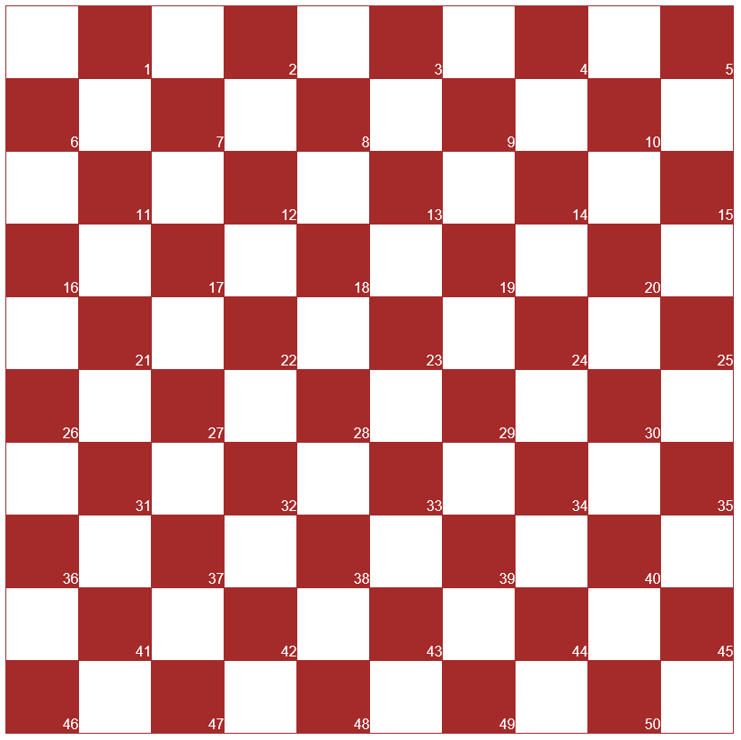

棋盘是由深浅两色间隔排列的一百个小方格组成的正方形，（即：10小方格X10小方格）深色的小方格里都有阿拉伯数字的号码叫做棋位，号码是作为棋局记录使用的。
棋子是圆柱型的，黑白棋子各二十枚，棋子表面上有罗纹，这种棋子叫“兵”
把兵翻过来（或两兵叠起来）就是“王”（兵跳到对方的底线升变为“王”或称为王棋）
棋子的原始摆放位置
行棋前，把棋盘摆在对弈者中间，双方面对棋盘的左下角是黑格，黑兵摆在1至20的棋位上，白兵摆在31至50的棋位上，对局开始执白棋者先行。
所有棋子均在黑格子中行走。
1、兵的走法
兵的走法是：只能向前斜走一格，不能后退。
2、兵的跳吃
兵的跳吃是：黑白两枚棋子紧连在一条斜线上，如轮到某一方行棋时，对方棋子的前后正好有一空棋位能跳过对方的棋子，那么就可以跳过对方的棋子把被跳过的棋子吃掉，并从棋盘上取下
3、兵的连跳
兵的连跳是是跳过对方的棋子以后，又遇上可以跳过的棋子，那么就可以连续跳过去，把被跳过的棋子吃掉，并且从棋盘上一次取下。兵的走法是不能后退，但是遇到跳吃或连续跳时，可以退跳或吃子。
4、兵的升变
对局开始前双方在棋盘上摆的棋子都是兵，兵在对局过程中，走到或跳到对方底线停下，即可升变为“王”刚升变的王要到下一步才能享有王的走法的权利。
兵在对局过程中，走到或跳到对方底线没停下（即中途经过），不可以升变为“王”。
5、王的走法
王的走法是：王在其位于任何一条斜线上均可进退，并且不限格数。（类似国际象棋的象的走法）
6、王的跳吃
王的跳吃是王与对方棋子遇在同一斜线上，不管相距有几个棋位，对方棋子的前后只要有空棋位，那么王棋就可以跳过去吃掉对方的棋子，而且跳吃时要跳过的对方棋子前后面的那一个空位里。
7、王的连跳
王的连跳与兵连跳的情况基本上相同，只是不限距离。
1、有吃必吃
凡有跳吃或连跳机会时，不管对自己是否有利都必须连续跳吃或跳过，尤其是王。如果有连跳的局面，必须将对方所有的棋子跳完，直到无可再跳时才能停下。
2、吃多数棋子（必须吃多不能吃少）
如果有两条路线或2枚棋子都能吃对方的棋子，那么不管是否对自己有利，必须吃多的棋子。例如：同时在两条路线上可以吃对方的棋子，一条路线上能吃3枚棋子，另一条路线上能吃2枚棋子，必须先跳吃3枚棋子（的线路）。
3、土耳其打击
在连跳时，王或兵都必须将对方所有可能跳过的棋子跳完以后，才可以将对方被跳过的棋子从棋盘上一次性取下。一着棋连跳中即不允许跳一枚（棋子）取一枚（棋子），也不允许重复地两次跳过对方的同一枚棋子。利用这条规定形成的吃子方法叫做土耳其打击。
1、所有的棋子都被对方吃掉为负棋。
2、残留在棋盘上的棋子，被对方封锁，无子可动为负棋。
3、棋局进行到最后无任何可能战胜对方时为和棋。